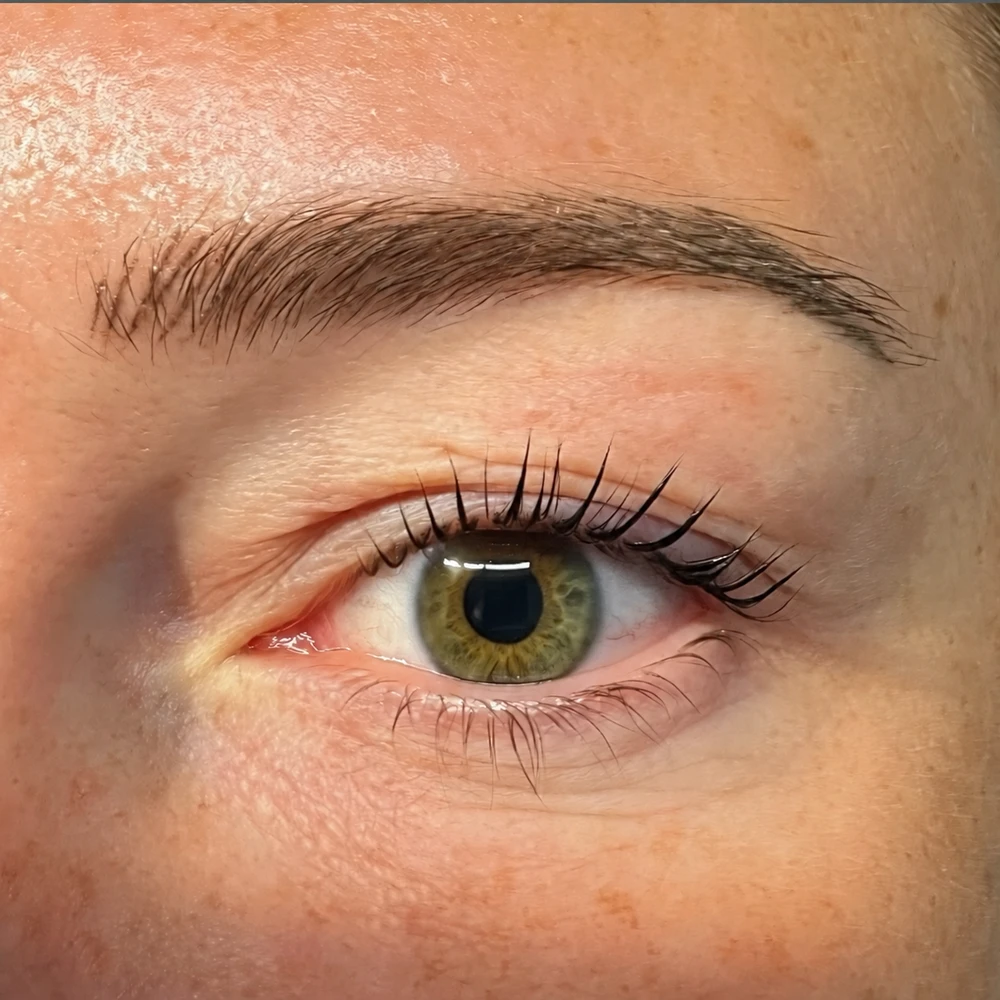
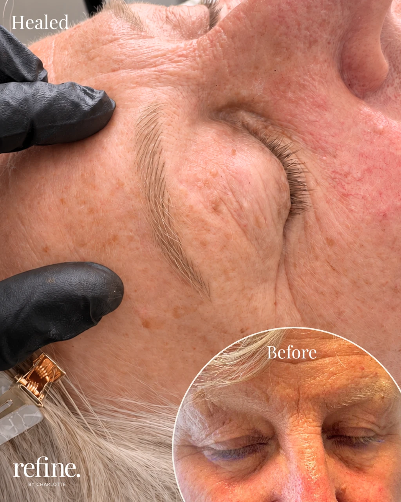

Brow guide
Used AI to preview fuller brows? Here's what's realistic
AI photo tools make it easy to try on fuller, more balanced brows before committing to anything. But an AI version of your face is an illustration, not a treatment plan. Here's what it can and can't tell you, and how to turn that inspiration into a result that still looks like you.
Bring your AI preview to a free 30-minute consultation

What an AI preview can help you explore
- Different brow shapes and arches
- How much fullness you like
- Soft definition versus a stronger, made-up look
- Ideas and photos to bring to your consultation
What an AI preview can't predict
AI images often smooth the skin, change facial proportions or add brow hairs that can't be reproduced exactly. They can't tell you how your skin will hold pigment, the exact healed colour, how your own brow hair grows, how much asymmetry can be corrected, or how any previous brow tattoo will affect the result. An AI image is not a guarantee, and it isn't a skin or suitability assessment.
Which treatment is closest to your preview?
If your preview shows individual, hair-like brows, that's closest to nano hairstroke brows (£295 including top-up). If it shows softly filled, shaded brows, that's closer to ombre powder brows (£250 including top-up). If your brows are sparse or fading, our guide to natural brows for sparse or thinning eyebrows explains the options.
From inspiration to a real result
At your consultation, Charlotte uses your inspiration photos as a starting point, then maps a shape that suits your own face and features, matches the pigment to your natural hair and skin tone, and agrees everything with you before any treatment. The photo below is a real healed result from the studio, not an AI image.
A real result, not an AI image

Your free 30-minute consultation
Your consultation is free, takes around 30 minutes and happens at Charlotte's private studio in Rockbeare, near Exeter, before any treatment is booked. There's no pressure to go ahead.
- We talk through your brows, the look you'd love and anything you've tried before, including any previous brow tattooing or microblading.
- Charlotte looks at your natural brows and skin and recommends the technique that suits you: nano hairstrokes, ombre powder brows, or sometimes no treatment at all.
- You'll go through a medical review, and a patch test is carried out before treatment.
- You can ask anything: healing, aftercare, prices and next steps.
Your questions, answered.
Yes. It's a helpful way to show the shape and fullness you like. Charlotte will talk you through what's realistic for your own brows and skin.
Not exactly. An AI image can change your skin, proportions and brow hairs in ways real treatment can't. The aim is a soft, natural result designed around your features, and everything is agreed with you before treatment.
It's a useful starting point. Hair-like previews are closer to nano brows; softly shaded previews are closer to ombre powder brows. Your skin and natural brows also matter, which is what the free consultation is for.
Yes. All before-and-after and healed photos on this website are real clients of Refine by Charlotte, shared with their consent. They are not AI-generated.
Let's talk
Start with a free consultation.
Tell Charlotte which treatment you're interested in. She'll get in touch to answer your questions and arrange the next step.
Your enquiry is a request, rather than a confirmed appointment.
Message me on WhatsAppPrivate studio in Rockbeare, near Exeter.
Appointments by arrangement.